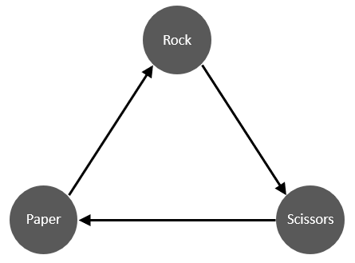

An R implementation of DeepMind’s multidimensional Elo rating (mELO) approach for evaluating agents. The mELO rating system has the desirable properties of being able to handle cyclic, non-transitive interactions and is better behaved in the presence of redundant copies of agents or tasks.
Balduzzi, et al. (2018) proposed that a rating/evaluation method should have the following properties:
Typical methods for performing pairwise comparisons such as Elo or Glicko violate P1 and can result in poor evaluations of agents and poor predictions of outcomes.
This package uses code directly from Alec Stephenson and Jeff Sonas’s excellent PlayerRatings package (v1.0-3, 2019-02-22).
You can install the mELO package from github using:
devtools::install_github("dclaz/mELO")
and it can be loaded using:
library(mELO)
The following vignettes describe the functionality and utility of the package in more detail:
The example below demonstrates how a ratings model can be fit using the ELO() and mELO() functions.
We will fit models to predict the outcome of rock-paper-scissor matches. It contains 120 matches.

# Inspect rock paper scissors data head(rps_df) #> time_index throw_1 throw_2 outcome #> 1 1 PAPER ROCK 1 #> 2 2 ROCK SCISSORS 1 #> 3 3 SCISSORS PAPER 1 #> 4 4 ROCK PAPER 0 #> 5 5 SCISSORS ROCK 0 #> 6 6 PAPER SCISSORS 0 # Fit ELO model rps_ELO <- ELO(rps_df) # Inspect modelled ratings rps_ELO #> #> ELO Ratings For 3 Players Playing 120 Games #> #> Player Rating Games Win Draw Loss Lag #> 1 SCISSORS 2204.6 80 40 0 40 0 #> 2 ROCK 2204.6 80 40 0 40 1 #> 3 PAPER 2190.7 80 40 0 40 0 # Get predictions ELO_preds <- predict( rps_ELO, head(rps_df) ) # Inspect outcomes and predictions cbind( head(rps_df), ELO_preds = round(ELO_preds, 3) ) #> time_index throw_1 throw_2 outcome ELO_preds #> 1 1 PAPER ROCK 1 0.48 #> 2 2 ROCK SCISSORS 1 0.50 #> 3 3 SCISSORS PAPER 1 0.52 #> 4 4 ROCK PAPER 0 0.52 #> 5 5 SCISSORS ROCK 0 0.50 #> 6 6 PAPER SCISSORS 0 0.48
We note that while the estimated ratings are roughly equal, the predicted probabilities are very poor. Elo cannot handle the cyclic, non-transitive nature of this system.
Let’s fit a multidimensional Elo model using mELO():
# Fit mELO model rps_mELO <- mELO(rps_df, k=1) # Inspect modelled ratings rps_mELO #> #> mELO Ratings For 3 Players Playing 120 Games #> #> k = 1. #> #> Player Rating Games Win Draw Loss Lag #> 1 PAPER 2200.7 80 40 0 40 0 #> 2 SCISSORS 2200.2 80 40 0 40 0 #> 3 ROCK 2199.2 80 40 0 40 1 # Get predictions mELO_preds <- predict( rps_mELO, head(rps_df) ) # Inspect outcomes and predictions cbind( head(rps_df), mELO_preds = round(mELO_preds, 3) ) #> time_index throw_1 throw_2 outcome mELO_preds #> 1 1 PAPER ROCK 1 0.999 #> 2 2 ROCK SCISSORS 1 0.999 #> 3 3 SCISSORS PAPER 1 0.999 #> 4 4 ROCK PAPER 0 0.001 #> 5 5 SCISSORS ROCK 0 0.001 #> 6 6 PAPER SCISSORS 0 0.001
A convenient helper function has been provided to generate predictions for all interactions:
model_pred_mat( rps_mELO, rps_df[[2]] ) %>% round(3) %>% knitr::kable()
| PAPER | ROCK | SCISSORS | |
|---|---|---|---|
| PAPER | 0.500 | 0.999 | 0.001 |
| ROCK | 0.001 | 0.500 | 0.999 |
| SCISSORS | 0.999 | 0.001 | 0.500 |
The mELO model with k=1 can handle the cyclic, non-transitive nature of this system which results in much more accurate predictions. The k parameter determines the complexity of the non-transitive interactions that can be modelled.